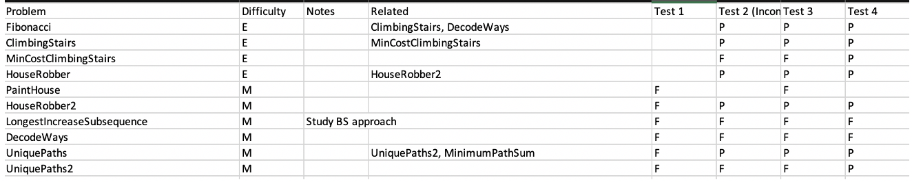

December 22, 2020
Hello, readers! Or, rather I should say “Hola” because currently I’m roughly 2,300 miles from home, in Mexico City, relaxing underneath a wooden Airbnb bunkbed as midnight creeps closer. The only thing I’m thinking about is how much I miss the feel of cotton sheets compared to the salmon-colored polyester sheets on my current bed. Also, the pillow feels marshmallow soft, very different than what I’m used to. Anyway, this blog is dedicated to a list of algorithm and data structure questions commonly asked by FANG companies that I’ve put together the past eight months of grinding Leetcode questions. Enjoy!
This project first started during the beginning of quarantine back in March. I knew that between working remotely, and literally not being able to do anything, I’d have a surplus of free time. I set myself a couple of goals to keep myself busy, one of which was to get really good at Leetcode algorithm and data structure questions.
AIt took me a couple of weeks to get a flow going, but once I did, my daily schedule was pretty much:
That was during the weekday. For the weekend, sometimes I’d do questions literally all day just because I had nothing else to do.
I did this for a few months, putting in about 30hrs a week, for a few months before getting bored and taking a break by doing system design questions for a month before going back to Leetcode. I repeated this pattern for the last eight months.
One thing I made sure to do was to be very organized as to how I kept track of my questions. For example, each question I did fell into one of these categories:
The categories are important because it helped me learn more efficiently. E.g., by doing similar questions from a category, I was able to see certain design patterns and apply those patterns to other questions to enforce those pattern design. This is especially true for categories such as Permutation and Combinations, Dynamic Programming, Sliding Window, Two Pointers, Modified Binary Search and Heaps & PQ. It actually took me a while to figure this out because, prior, I used to do questions randomly. Doing related questions (all related questions are marked on the excel sheet in the Dropbox link that I shared) are also important to enforcing learning.
Another thing that I recommend is keeping an Excel sheet of all the questions that you’ve done, separated by a different tab for the different categories e.g., this is the Dynamic Programming tab:
If there is a question that you failed at doing, mark it as failed (F), and that way, you can refer back to that question and redo it. This is very important because from my experience, if I failed at a question the first time, chances are that I won’t remember the solution a week from now.
I’d also recommend doing a category test once you’ve completed all questions from a category. For the test, just go through all the questions, and for each question, see if you can remember the solution from your head (no need to code it). If you can’t, mark the question as F and go back to it another day.
Lately, I’d say that if you can’t come up with a solution for a question in 10min, mark it as failed and view the answer. My rational for this is because it optimizes for the number of questions you can per given time.
Don’t forgot to come up with the time and space complexity for each question that you do!
Here’s the Dropbox Link for the 300 or so questions that I have. The way the directories are organized is home/category/question. Each question contains a comment section that includes the original Leetcode description, list of related problems, write-up of solution, and time and space complexity.
I ended up interviewing at Google a few weeks ago and making it to the second to last round but didn’t make it to the final. For me, I felt like my mistake wasn’t not knowing the solution to the questions that I was asked, but rather getting nervous and making dumb mistakes. The recruiter scheduled a check-up six months from now and invited me to do the interview again a year from now. I know a year from now seems like a long time, but in the meanwhile I’ll keep on grinding Leetcode, or until I set myself a different goal.
Thanks for reading and best of luck in your job search : ) If you have any other questions, feel free to reach out to me!